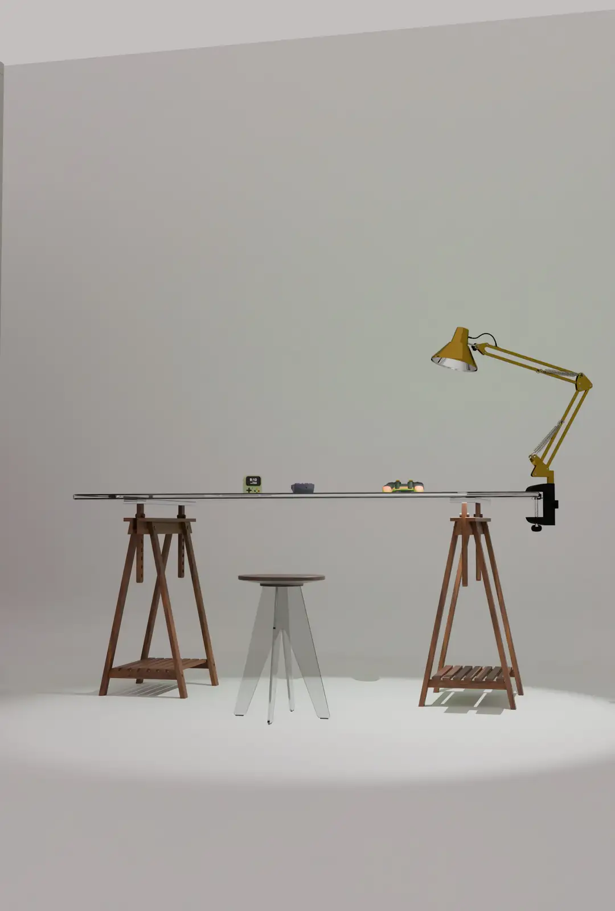
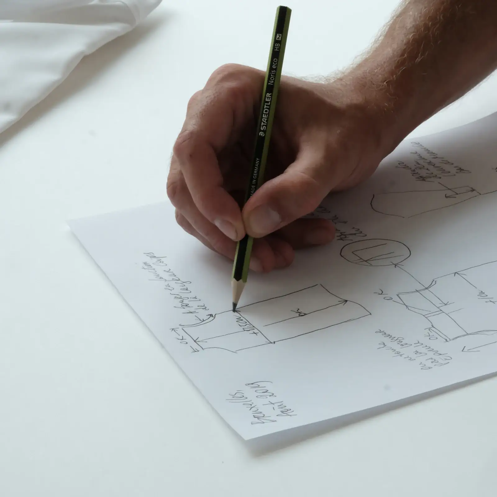
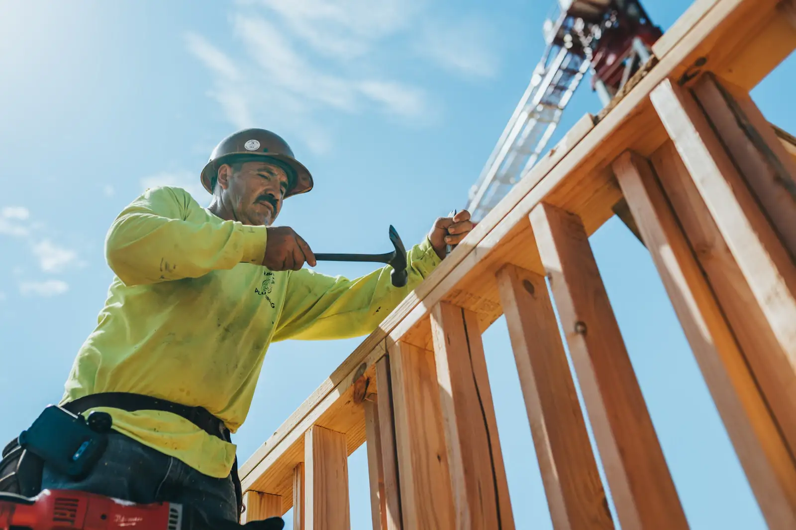
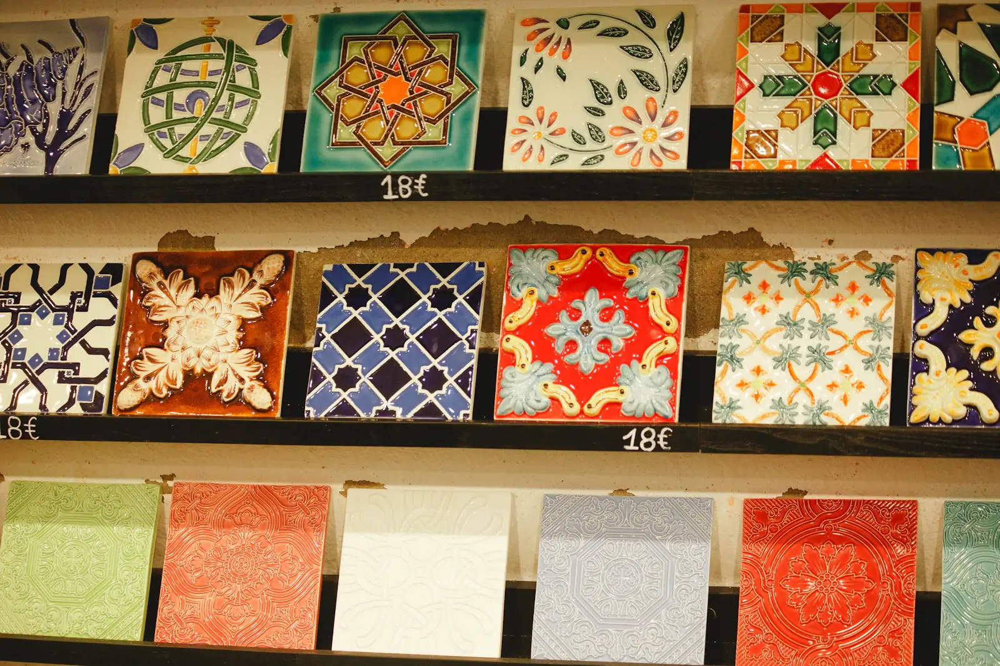
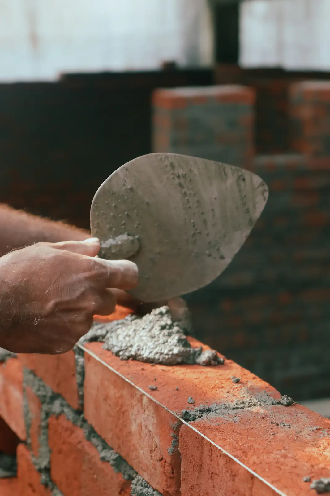
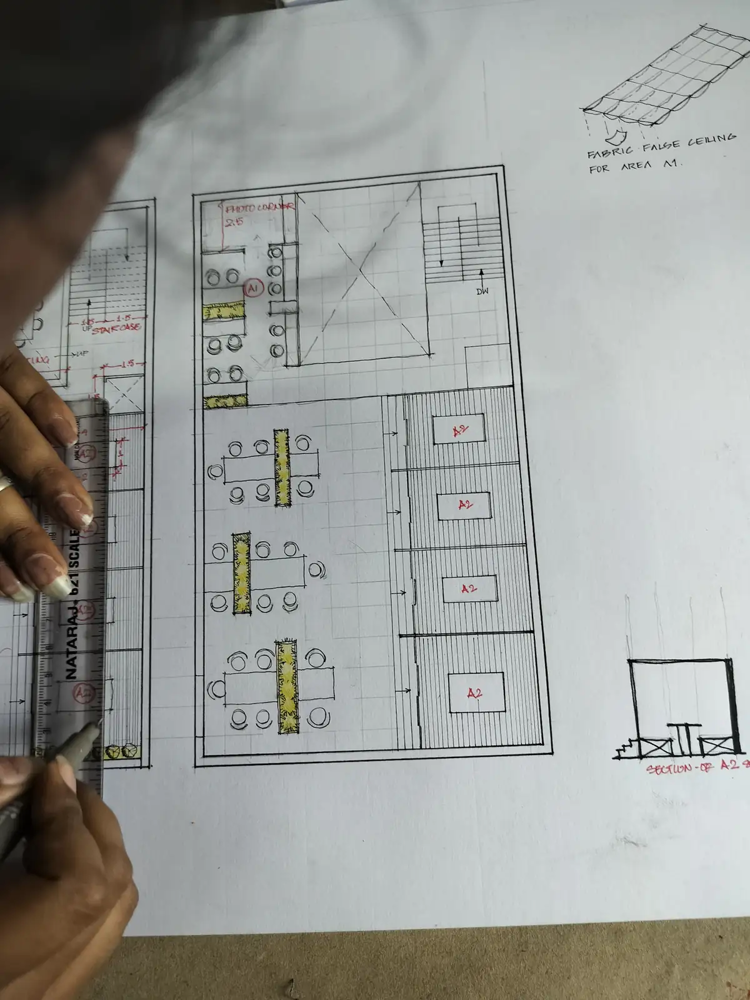
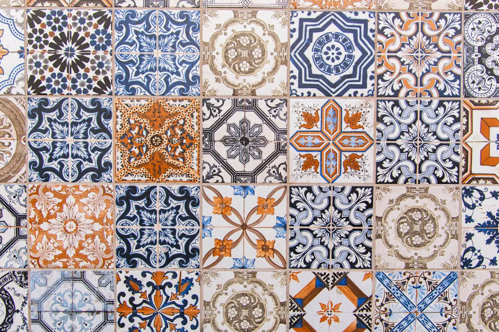
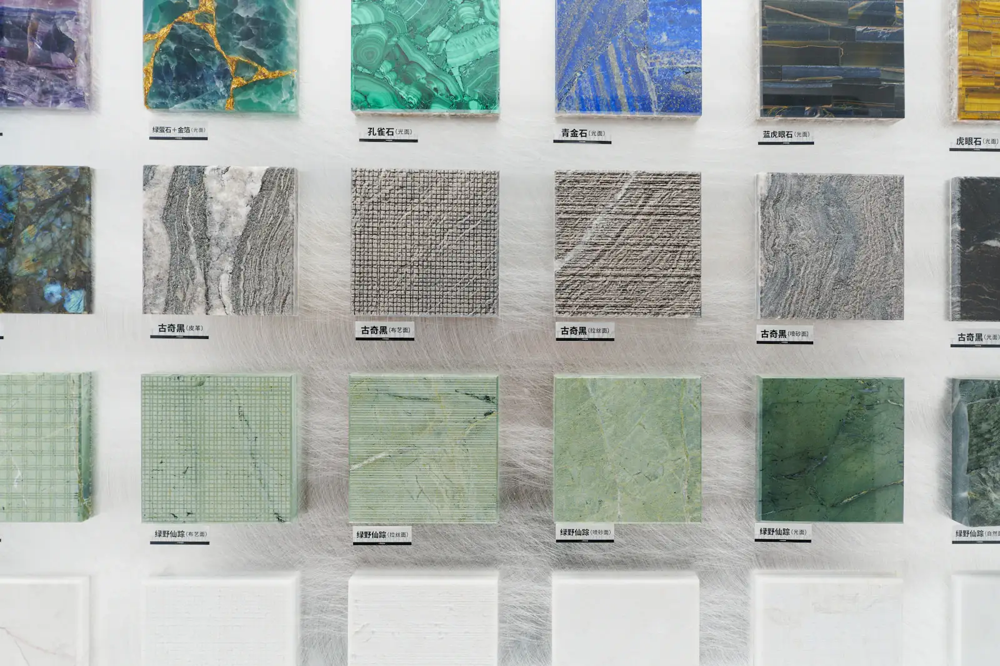

Um escritório pequeno, de propósito.
Somos cinco: duas arquitetas, um engenheiro, um mestre de obras e um orçamentista. Todo mundo vai à obra. Funcionamos no térreo de um sobrado na Ponta Fina, com uma prancheta grande e café coado às 15h.
Crescer até virar construtora nunca foi o plano.
Começou com uma casa de praia que ninguém queria reformar.
Em 2014, a Helena tinha acabado de sair de um escritório grande e o Davi tocava obra de prédio. Um amigo em comum tinha uma casa em Pirangi com cupim no telhado, ferrugem em tudo e um orçamento que três construtoras recusaram.
Os dois pegaram. O Seu Raimundo veio junto, indicado por um mestre que já não aguentava subir escada. A obra durou quatro meses, a casa está de pé e sem goteira até hoje, e o amigo virou o primeiro de 186 clientes.
Desde então a gente cresceu pouco, de propósito. A Bia chegou em 2018 com uma mala de amostras de cerâmica; o Caio, em 2019, depois do único orçamento que erramos.

A gente acredita que uma boa reforma é aquela que você esquece que fez. A porta não empena, o reboco não descasca, a conta de luz não assusta. Por isso pegamos no máximo seis obras por vez, e o mesmo arquiteto que desenha é o que visita o canteiro.
— Helena, numa reunião de 2016, e desde então é regra.
- obras entregues, de banheiro a pousada
- 186
- entregues no prazo combinado em contrato
- 94%
- anos de atuação no litoral potiguar
- 12
- processos trabalhistas ou com clientes
- 0
- de economia média de energia nas casas reformadas*
- 31%
* Medida em 40 obras, comparando 12 meses de conta de luz antes e depois da reforma.
O que a gente não abre mão.
Se alguma dessas regras for um problema, é melhor saber na primeira conversa.
No máximo seis obras por vez.
Com sete, alguém deixa de ser visitado. Já tentamos, em 2017. Não repetimos.
Quem desenha, visita.
O arquiteto do projeto vai ao canteiro duas vezes por semana. Detalhe resolvido no papel sai mais barato que detalhe resolvido na marreta.
Material local primeiro.
Cerâmica do Seridó, madeira certificada de Jundiaí, cal. Chega mais rápido, custa menos e quem conserta mora perto.
Orçamento fechado é fechado.
O número do contrato só muda se o projeto mudar, e toda mudança vem por escrito, com preço, antes de ser feita.
Diário toda sexta.
Fotos, equipe presente, o que foi feito e o que deu errado. Até as 18h, faça chuva ou faça sol (de preferência sol).
Manutenção entra no projeto.
Se uma peça vai precisar de troca em cinco anos, a gente desenha para que a troca seja fácil e barata.
Somos cinco. Todo mundo vai à obra.
Mais as equipes de pedreiros, marceneiros e eletricistas que trabalham com a gente há anos, sempre as mesmas.
-

Helena Quaresma
Arquiteta, sócia fundadora
Desenha tudo à mão antes de abrir o computador.
-

Davi Moraes Brandão
Engenheiro civil, sócio fundador
Visita cada obra pelo menos duas vezes por semana.
-

Bia Fontes
Arquiteta de interiores
Coleciona amostras de cerâmica do Seridó.
-

Seu Raimundo Lira
Mestre de obras há 27 anos
Está com a gente desde a primeira obra.
-

Caio Neves
Orçamentista
Errou um orçamento em 2019 e nunca mais deixou passar.
O espaço


Visitas ao estúdio com hora marcada. A gente mostra as amostras e serve o café.
Parceiros e imprensa
- RevistaCasa Potiguar
- Prêmio Arquitetura
do Nordeste2023 - MadeireiraJundiaí
- Cerâmica Seridó
Vamos ver sua casa?
A primeira visita não custa nada. Você mostra a casa, a gente faz as perguntas chatas e sai de lá dizendo se a obra faz sentido.
Marcar uma visita Ou chamar no WhatsApp, (84) 99188-0412